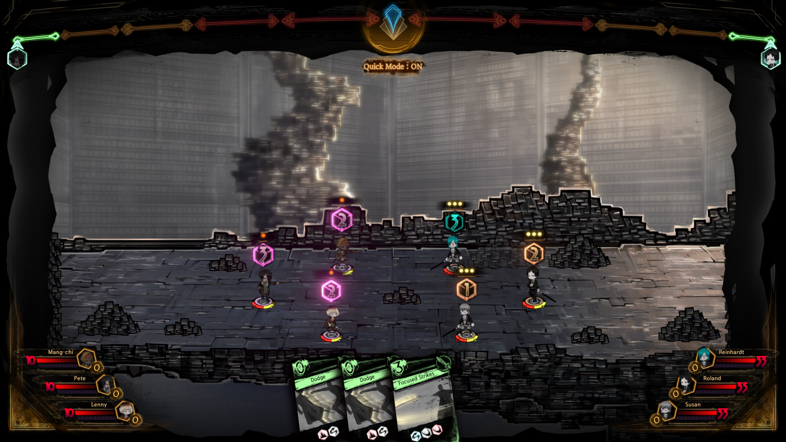

The Library
Librarians
Within the Library, ten patron librarians will be at your disposal to recieve all of your guests. Each librarian is in charge of a different floor, and each floor has different abnormality pages that make them stand out from the other floors. As you progress through a given floor's abnormality battles, you'll uncover more of that librarian's story and growth as a character. Within each floor, four assistant librarians can be unlocked to further aid the patron librarian in combat, evening out the odds of each reception. Unlike the patron librarians, assistant librarians can have their apperance changed to the player's liking, allowing the player to create their own characters to play as in the game. More assistant librarians can be unlocked as more abnormality battles are completed on their respective floor. Below is a list of all the patron librarians, and their respective floor. Click here for a detailed explanation of the librarians.
Roland - Floor of General Works
Malkuth - Floor of History
Yesod - Floor of Technological Sciences
Hod - Floor of Literature
Netzach - Floor of Art
Tipereth - Floor of Natural Sciences
Gebura - Floor of Language
Chesed - Floor of Social Sciences
Binah - Floor of Philosiphy
Hokma - Floor of Religion
Receptions
Receptions are where the combat gameplay of Library of Ruina takes place. Before each reception, you must invite guests to the Library with books made from your previous guests. After the guests are invited, you will begin the preperation phase of the battle. In the preperation phase, players can view the enemy guests' combat pages, key pages, passives, and more information that can be used to select what floor would be best fit for recieving them. After the preperation phase, the stageplay phase begins. In the stageplay phase, players will engage in turn-based combat using their decks to defeat theit current guests. Click here for a detailed explanation of a reception and the battle mechanics. Some battles have multiple acts to be completed, and thus multiple preperation and stageplay phases.
